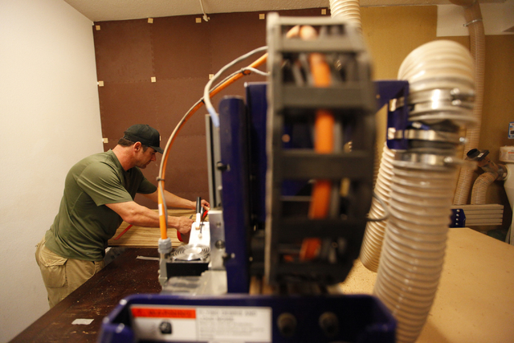
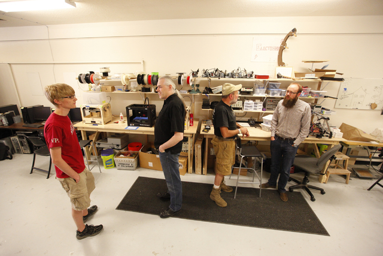

{kind=link}
This story was first published in the Las Vegas Review-Journal.
L ess than a block away from Fremont Street, sandwiched between a Mexican-themed restaurant and a parking garage, sits SYN Shop, a haven for tech enthusiasts.
SYN Shop calls itself a “hackerspace.” The term “hackers” carries a sinister connotation in the general lexicon: covert computer experts working to break through security systems.
But for SYN Shop and similar spots around the nation and world, the term is more about innovation. A hackerspace is a place for people to work on personal or collaborative projects that range from robotics to welding to sewing.
Peek inside SYN Shop, 117 N. Forth St., and you will feel an aura that is equal parts fantastic and geeky.
An old vending machine has been altered to accept credit cards and has had its former tobacco wares replaced with computer parts.
A nearby bookcase is filled with texts such as “Python in a Nutshell” — a 600-page how-to on the programming language — and “The Modern Dictionary of Electronics.”
A wooden Darth Vader head made from a laser cutter at the shop rests on a shelf.
On a recent Monday, a man flew a drone that he built in the back lot.
In a nearby workstation labeled “Danger Room,” Chris Oremus worked on a set of coffee tables made from Carpathian elm wood, among other types, using a “shopbot,” a robotic tabletop machine that can cut and drill. Oremus used software to design his project that the shopbot reads and uses to control the cutter automatically.
{kind=link}
Oremus and other SYN Shop members, who pay $40 monthly membership fees, said it was the collaborative atmosphere that keeps them coming back.
“When you have a sounding board of someone to throw an idea off of, it’s like sharing the processing power, if you’re running a heavy program on your computer,” Oremus said.
SYN Shop board member Jeff Rosowski, better known as “Krux,” said he’s been tinkering since he was a kid. One of his latest alterations at first glance looks like an upright filing cabinet beside the vending machine.
But with the flick of a joystick, it springs to life as a 400-pound robot that scoots, blinking, around the room.
“Thirty years ago, this was a small computer,” said Krux as he controlled the large ’80s-era computer, mounted on an electric scooter.
Krux said he usually gets one of three reactions when he shows the robot in public: either people think it’s awesome, they’re afraid or they don’t even notice.
The local hackerspace began in a garage several years ago. Now in its own place in downtown Las Vegas, it’s become a self sufficient nonprofit, according to board members.
SYN Shop lets people check out the space a couple of times before they purchase a membership. Once they pay their fee and become vetted by three members, they receive a keycard to the space and are allowed to use all of the equipment inside, including a 3D printer, which stacks layers of material to form a three-dimensional model and costs around $1,300 to “a couple grand,” said Krux.
SYN Shop hosts events every week such as “Do It Yourself: World Domination Night (With Robots)” on Mondays and “Craft Night” on Wednesdays. These nights are for members to use the space to work on whatever project they like.
{kind=link}
In addition to weekly events, there are classes available for members and non-members alike. Classes have separate fees and typically cost between $10 and $40 depending on the materials used.
Classes include tech-related topics such as “Laser Cutting 101” and “3D Printing 101,” as well as traditional subjects such as “Welding for Craft and Art” on how to use a sewing machine.
SYN Shop reached out to the Downtown Project in 2012 after it had outgrown its meeting places in multiple members’ garages. Since opening its doors in February 2013, it has grown from 10 to more than 100 paying members.
Some members explain that SYN is an inside joke by Krux who is a network engineer. To Las Vegans it sounds like “sin,” as in “Sin City.”
But it actually refers to the first message a computer sends to a network server to establish a connection. The title is meant to symbolize the organization’s goal of collaboration.
And even visitors try to connect. People from out of town often seek out SYN Shop when they are in town for conventions such as the Consumer Electronics Show.
At the entrance of SYN Shop, visitors are encouraged to pin a dot on a U.S. map to plot their hometowns.
The splatter of dots indicate that visitors have come from California, Texas, Florida and the Great Lakes. International visitors also have come by, Rosowski said.
The organization is a Nevada nonprofit and has applied for 501(c)3 status. The space is run entirely by nine board members and around 12 active volunteers, said board member Nathan Bryant.
SYN Shop partnered recently with Henderson libraries for the annual Summer Reading Challenge. In an attempt to get kids interested in science and technology, the organization displayed science projects and had robotics demonstrations.
“It was great to see not only the kids using some of this stuff, trying it out, learning about it, but also the parents,” said Stephen Platt, branch manager at the Green Valley Library.
SYN Shop and Henderson libraries are planning a slate of 20 to 25 free science and technology classes for spring 2015, said Platt.
{kind=link}